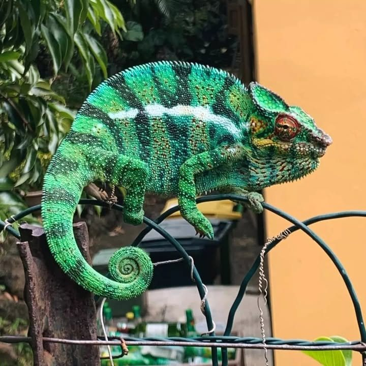
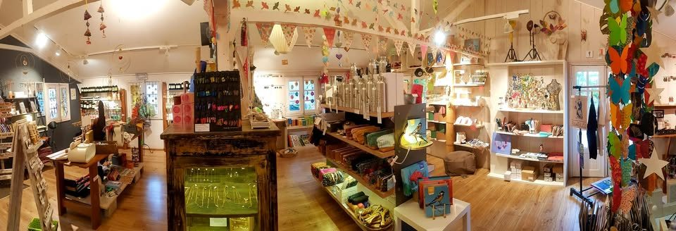
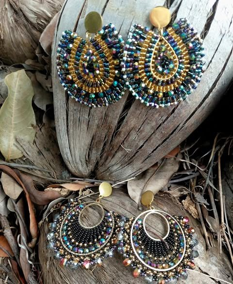
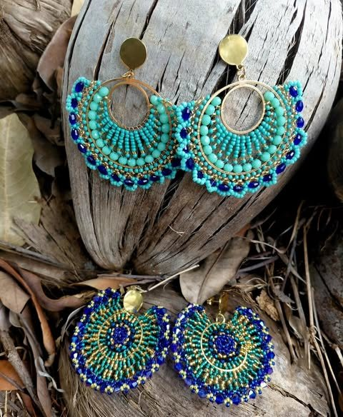
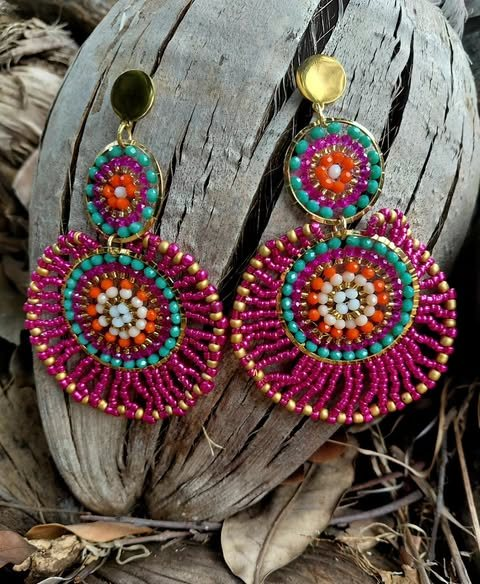
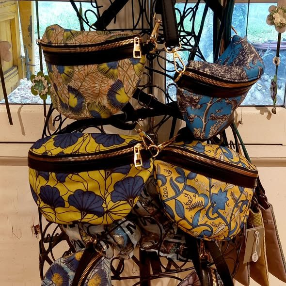
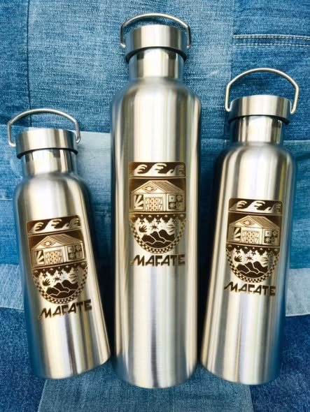

L’Éperon · Saint-Gilles-les-Hauts
Huiles essentielles de production locale, cosmétiques bios et créations de plus de 25 artisans, selon l’inspiration du moment.

Recommandé à 94 % sur FacebookLa case
Au 71 route du Théâtre, Case Nature rassemble ce que l’île a de plus doux : les huiles essentielles produites ici, des soins bios, et une boutique de cadeaux où chaque objet raconte quelqu’un.
On y entre pour une huile essentielle, on en ressort avec des boucles d’oreilles, une céramique ou un panier tressé.

Les rayons
Des huiles de qualité, produites à La Réunion, et toute la gamme Run’Essence.
Des soins naturels pour prendre soin de soi, et de quoi composer un joli cadeau.
Bijoux, céramique, déco, sacs : les pièces de plus de 25 créateurs, renouvelées au fil des saisons.
Les nouveautés
« Perles de verre, fil de nylon, temps, patience sont les maîtres mots pour un résultat magnifique ! »





71 route du Théâtre,
L’Éperon, Saint-Gilles-les-Hauts